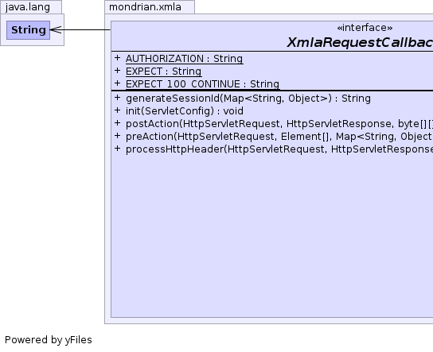
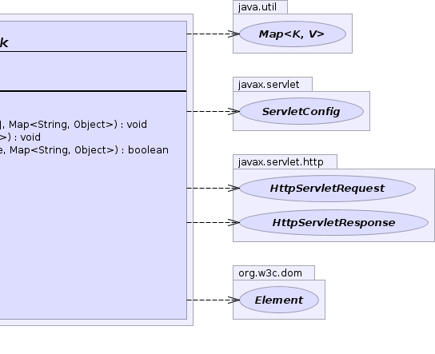

public interface XmlaRequestCallback
XmlaServlet.handleSoapHeader(javax.servlet.http.HttpServletResponse, org.w3c.dom.Element[], byte[][], java.util.Map<java.lang.String, java.lang.Object>) and XmlaServlet.handleSoapBody(javax.servlet.http.HttpServletResponse, org.w3c.dom.Element[], byte[][], java.util.Map<java.lang.String, java.lang.Object>). |
 |
| Modifier and Type | Interface and Description |
|---|---|
static class |
XmlaRequestCallback.Helper |
| Modifier and Type | Field and Description |
|---|---|
static String |
AUTHORIZATION |
static String |
EXPECT |
static String |
EXPECT_100_CONTINUE |
| Modifier and Type | Method and Description |
|---|---|
String |
generateSessionId(Map<String,Object> context)
The Callback is requested to generate a sequence id string.
|
void |
init(javax.servlet.ServletConfig servletConfig) |
void |
postAction(javax.servlet.http.HttpServletRequest request,
javax.servlet.http.HttpServletResponse response,
byte[][] responseSoapParts,
Map<String,Object> context)
This is called after all Mondrian processing (DISCOVER/EXECUTE) has
occurred.
|
void |
preAction(javax.servlet.http.HttpServletRequest request,
Element[] requestSoapParts,
Map<String,Object> context)
This is called after the headers have been process but before the
body (DISCOVER/EXECUTE) has been processed.
|
boolean |
processHttpHeader(javax.servlet.http.HttpServletRequest request,
javax.servlet.http.HttpServletResponse response,
Map<String,Object> context)
Process the request header items.
|
static final String AUTHORIZATION
static final String EXPECT
static final String EXPECT_100_CONTINUE
void init(javax.servlet.ServletConfig servletConfig) throws javax.servlet.ServletException
javax.servlet.ServletExceptionboolean processHttpHeader(javax.servlet.http.HttpServletRequest request, javax.servlet.http.HttpServletResponse response, Map<String,Object> context) throws Exception
Note that it is upto the XMLA client to determine whether or not there is an Expect header entry (ADOMD.NET seems to like to do this).
Exceptionvoid preAction(javax.servlet.http.HttpServletRequest request, Element[] requestSoapParts, Map<String,Object> context) throws Exception
ExceptionString generateSessionId(Map<String,Object> context)
null if they do not want
to generate a custom session ID, in which case, the default algorithm
to generate session IDs will be used.context - The context of this query.null.